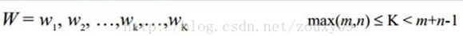

概述
DTW可以计算两个时间序列的相似度，尤其适用于不同长度、不同节奏的时间序列
解释
Dynamic Time Warping（DTW）诞生有一定的历史了（日本学者Itakura提出），它出现的目的也比较单纯，是一种衡量两个长度不同的时间序列的相似度的方法。应用也比较广，主要是在模板匹配中，比如说用在孤立词语音识别（识别两段语音是否表示同一个单词），手势识别，数据挖掘和信息检索等中。
1、DTW将自动warping扭曲时间序列（即在时间轴上进行局部的缩放），使得两个序列的形态尽可能的一致，得到最大可能的相似度。
2、DTW采用了动态规划DP（dynamic programming）的方法来进行时间规整的计算，可以说，动态规划方法在时间规整问题上的应用就是DTW。
feature to feature
在时间序列中，需要比较相似性的两段时间序列的长度可能并不相等，在语音识别领域表现为不同人的语速不同。因为语音信号具有相当大的随机性，即使同一个人在不同时刻发同一个音，也不可能具有完全的时间长度。而且同一个单词内的不同音素的发音速度也不同，比如有的人会把“A”这个音拖得很长，或者把“i”发的很短。在这些复杂情况下，使用传统的欧几里得距离无法有效地求的两个时间序列之间的距离（或者相似性）。

例如图A所示，实线和虚线分别是同一个词“pen”的两个语音波形（在y轴上拉开了，以便观察）。可以看到他们整体上的波形形状很相似，但在时间轴上却是不对齐的。例如在第20个时间点的时候，实线波形的a点会对应于虚线波形的b’点，这样传统的通过比较距离来计算相似性很明显不靠谱。因为很明显，实线的a点对应虚线的b点才是正确的。而在图B中，DTW就可以通过找到这两个波形对齐的点，这样计算它们的距离才是正确的。
例如图A所示，实线和虚线分别是同一个词“pen”的两个语音波形（在y轴上拉开了，以便观察）。可以看到他们整体上的波形形状很相似，但在时间轴上却是不对齐的。例如在第20个时间点的时候，实线波形的a点会对应于虚线波形的b’点，这样传统的通过比较距离来计算相似性很明显不靠谱。因为很明显，实线的a点对应虚线的b点才是正确的。而在图B中，DTW就可以通过找到这两个波形对齐的点，这样计算它们的距离才是正确的。
那如果才知道两个波形是对齐了呢？也就是说怎么样的warping才是正确的？直观上理解，当然是warping一个序列后可以与另一个序列重合recover。这个时候两个序列中所有对应点的距离之和是最小的。所以从直观上理解，warping的正确性一般指“feature to feature”的对齐。
动态时间规整DTW
线性缩放
动态时间规整DTW是一个典型的优化问题，它用满足一定条件的的时间规整函数W(n)描述测试模板和参考模板的时间对应关系，求解两模板匹配时累计距离最小所对应的规整函数。
假设我们有两个时间序列Q和C，他们的长度分别是n和m：（实际语音匹配运用中，一个序列为参考模板，一个序列为测试模板，序列中的每个点的值为语音序列中每一帧的特征值。例如语音序列Q共有n帧，第i帧的特征值（一个数或者一个向量）是qi。至于取什么特征，在这里不影响DTW的讨论。我们需要的是匹配这两个语音序列的相似性，以达到识别我们的测试语音是哪个词）
Q = q1,q2,…,qi,…, qn ;
C = c1,c2,…, cj,…, cm ;
首先，我们依然采用两个序列中每一对“点”之间的距离来计算形似度，即使两个序列中的点的个数可能不一样。不过，因为可以warping规整时间轴，所以，我们并不是在两个序列中依次取一对点来计算距离，而是每个点有可能对应于另一个序列中的多个点。从上面图B可以看到这种一对多的情况。
当然，这种warping有一定要求，每个点都必须用到，不可跳过，要按照原始的次序，点对不可交叉。即要满足下面描述的 边界条件、连续性、单调性。
关于每一对点的距离计算，这个距离的算法并无规定，依赖于每个“点”的性质来选择，一个“点”可以是单个数值，也可以是一个多维向量。在简单的情况下，可以计算两个点的欧氏距离作为这一对点的距离。
理论上可以穷举两个序列的所有可能的warping 形式，逐一计算两者距离，距离最小的就是所要求的warping，但这样计算量太大，所以采用动态规划的方法来高效的完成计算。
动态规划
我们需要将连个序列对齐。最简单的对齐方式就是线性缩放了。把短的序列线性放大到和长序列一样的长度再比较，或者把长的线性缩短到和短序列一样的长度再比较。但是这样的计算没有考虑到语音中各个段在不同情况下的持续时间会产生或长或短的变化，因此识别效果不可能最佳。因此更多的是采用动态规划（dynamic programming）的方法。
为了对齐这两个序列，我们需要构造一个n x m的矩阵网格，矩阵元素(i, j)表示qi和cj两个点的距离d(qi, cj)（也就是序列Q的每一个点和C的每一个点之间的相似度，距离越小则相似度越高。这里先不管顺序），一般采用欧式距离，d(qi,
cj)= (qi-cj)2（也可以理解为失真度）。每一个矩阵元素(i, j)表示点qi和cj的对齐。DP算法可以归结为寻找一条通过此网格中若干格点的路径，路径通过的格点即为两个序列进行计算的对齐的点。
那么这条路径我们怎么找到呢？那条路径才是最好的呢？也就是刚才那个问题，怎么样的warping才是最好的。
我们把这条路径定义为warping path规整路径，并用W来表示， W的第k个元素定义为wk=(i,j)k，定义了序列Q和C的映射。这样我们有：

首先，这条路径不是随意选择的，需要满足以下几个约束：
1）边界条件：w1=(1,
1)和wK=(m, n)。任何一种语音的发音快慢都有可能变化，但是其各部分的先后次序不可能改变，因此所选的路径必定是从左下角出发，在右上角结束。
2）连续性：如果wk-1=
(a’, b’)，那么对于路径的下一个点wk=(a, b)需要满足 (a-a’) <=1和 (b-b’) <=1。也就是不可能跨过某个点去匹配，只能和自己相邻的点对齐。这样可以保证Q和C中的每个坐标都在W中出现。
3）单调性：如果wk-1=
(a’, b’)，那么对于路径的下一个点wk=(a, b)需要满足0<=(a-a’)和0<= (b-b’)。这限制W上面的点必须是随着时间单调进行的。以保证图B中的虚线不会相交。
结合连续性和单调性约束，每一个格点的路径就只有三个方向了。例如如果路径已经通过了格点(i, j)，那么下一个通过的格点只可能是下列三种情况之一：(i+1, j)，(i, j+1)或者(i+1, j+1)。
满足上面这些约束条件的路径可以有指数个，然后我们感兴趣的是使得下面的规整代价最小的路径：
分母中的K主要是用来对不同的长度的规整路径做补偿。因为不同的路径其长短不同，较长的路径有较多的“点对”，会有较多的距离累加上去，所以总距离除以K得到单位路径的距离。
我们的目的是什么？或者说DTW的思想是什么？是把两个时间序列进行延伸和缩短，来得到两个时间序列性距离最短也就是最相似的那一个warping，这个最短的距离也就是这两个时间序列的最后的距离度量。在这里，我们要做的就是选择一个路径，使得最后得到的总的距离最小。
这里我们定义一个累加距离cumulative distances。从(0, 0)点开始匹配这两个序列Q和C，每到一个点，之前所有的点计算的距离都会累加。到达终点(n, m)后，这个累积距离就是我们上面说的最后的总的距离，也就是序列Q和C的相似度。
累积距离γ(i,j)可以按下面的方式表示，累积距离γ(i,j)为当前格点距离d(i,j)，也就是点qi和cj的欧式距离（相似性）与可以到达该点的最小的邻近元素的累积距离之和：
最佳路径是使得沿路径的积累距离达到最小值这条路径。这条路径可以通过动态规划（dynamic programming）算法得到。